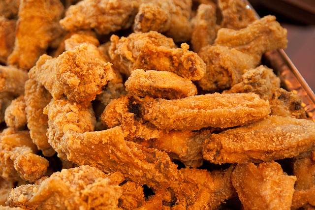

Fried Chicken, the original!

Description
As simple, as easy, as tasty as it gets!
With this classic fried chicken recipe, you can't go wrong - so go right and fry up some chicken tonight!
Steps
Just few simple strides!
- In a large skillet, heat oil over medium heat. Salt and pepper chicken pieces to taste, then roll in flour to coat.
- Place chicken pieces in skillet and fry on medium heat until one side is golden brown, then turn and brown other side until chicken is no longer pink inside and its juices (yum!) run clear.
- Drain on paper towel and serve! Tasty and crunchy, your coronaries will thank you.
Nutrions Facts
Beware,don't Overdo!
Per Serving: 623 calories; protein 38.9g; carbohydrates 21.9g; fat 41.3g; cholesterol 114.9mg; sodium 107.7mg.